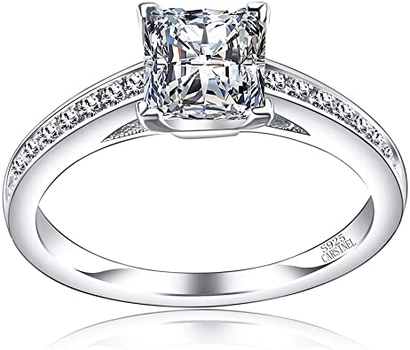

Seguramente has oído que usar un anillo en cierto dedo tiene significado ¿o no? Desde temas de matrimonio hasta de seguridad, el lugar en el que usas […]
Mano derecha o izquierda:
Si eres diestro, tu mano derecha se considera como la que está dispuesta a dar (activa) y la izquierda a recibir (pasiva). Si eres zurdo, será al contrario.
Dedo índice
Usar un anillo en el dedo índice de tu mano “activa” significa una alta autoestima. Tienes confianza en ti misma y capacidades de liderazgo. Si lo usas en la otra mano significa que prefieres obedecer en lugar de mandar.
Dedo medio
El dedo medio connota tus responsabilidades y valores de vida. Un anillo en este dedo significa que te tomas la vida muy en serio y sabes distinguir entre lo malo y lo bueno. Si este anillo lo usas en la mano “pasiva” entonces significa que eres una persona seria y en quien se puede confiar.
Dedo anular
Este dedo en la mano “activa” significa que eres una persona muy creativa y con mucha inspiración. Si lo usas en la mano “pasiva” es asociado al matrimonio y el amor.
Meñique
Usar un anillo en el dedo meñique puede tener varios significados: desde una capacidad de negociación y comunicativas hasta curiosidad y disponibilidad sexual. En la mano pasiva, significa que sabes escuchar a la gente y tienes una fuerte intuición.
Pulgar
Este anillo en la mano “activa” significa que sabes ponerte a ti mismo antes que a los demás y crear una imagen fuerte. Y en la mano “pasiva” significa lo contrario: tiendes a dejar que los demás te manipulen.
